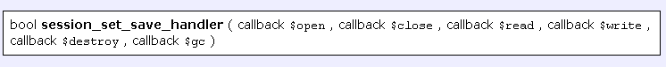

Bonjour, dans ce tutoriel je vais tenter de vous expliquer le plus clairement possible comment utiliser la base de données pour stocker et sécuriser des sessions. Je vais prendre pour exemple le SGBD MySQL, mais si vous utilisez un autre SGBD ou une classe SQL, il vous suffira d'adapter le script. Accrochez-vous, c'est parti ! :pirate:
Petit rappel pour ceux qui ne s'en souviendraient plus ou qui n'auraient pas le courage d'aller relire le tutoriel sur le PHP :p . Les sessions sont de petits fichiers stockés du côté serveur, contrairement aux cookies qui eux sont stockés chez le client. Les sessions sont stockées dans le dossier tmp de votre serveur (sauf si vous utilisez Free, auquel cas vous avez sans doute créé votre propre dossier).
Ce dossier est sécurisé et caché, de façon à ce que personne ne puisse y accéder.
Mais pourquoi alors voudrais-tu qu'on les stocke dans la base de données ?
J'y arrive... ^^ Le problème c'est que comme tout ce qui est caché et protégé, il est possible d'y accéder !
Un des problèmes qui peut se poser, c'est qu'il y a deux moyens de transmettre le nom du fichier correspondant à vos informations : dans les cookies de préférence (si vous ouvrez vos cookies, vous devriez voir des cookies s'appelant PHPSESSID) et si l'utilisateur ne les accepte pas, dans l'URL (évidement, le fait de mettre les sessions dans la base de données ne change en rien cela ;) ).
Et c'est là que le bât blesse, car si vous donnez un lien contenant dans l'URL l'identification de votre session, il peut être assez facile d'accéder aux informations de votre session pour un hacker. Et ensuite, bah... d'avoir accès à votre e-mail, ou toute autre information contenue dans la session, par exemple.
Cela est d'autant plus facile si vous êtes hébergés chez Free car votre dossier n'est même pas protégé. >_
Bon arrêtons là, car sinon je sens que vous allez devenir paranoïaques ;) . Stocker vos sessions dans la base de données peut aussi être un moyen de contourner la limite de vie de vos sessions fixée par votre hébergeur...
Si vous êtes prêts, je vous propose d'entrer dans le vif du sujet.
Là, normalement, vous êtes en train de vous demander : "Mais comment je vais bien pouvoir faire pour stocker les sessions dans ma base de données ? À tous les coups, il va nous sortir un truc super compliqué...". Rassurez-vous, les développeurs de PHP ont pensé à tout :-° ...
Cette solution a un nom : session_set_save_handler ! :magicien:
Hein ? Mais qu'est-ce que c'est que ça ?
Une fonction assez utile
Et ensuite, ce n'est pas ça, mais une fonction PHP qui va nous être bien utile... En effet cette fonction, comme l'auront peut-être compris certains en voyant son nom, permet de définir les fonctions à utiliser pour utiliser les sessions.
La voilà en entier :

Heu :o , tu peux nous la décrire un peu ?
Mais oui, bien sûr, j'y arrive ! Alors tout d'abord, comme vous pouvez le voir, cette fonction renvoie un bool soit... un booléen : logiquement true si elle a réussi, ou false si elle a échoué.
Ce qui est sans doute un peu plus mystérieux, ce sont ses paramètres. En effet, elle prend des callbacks... Qu'est-ce que ces callbacks ?
Les callbacks
Je vais être obligé de faire une petite digression, pour que tout le monde comprenne. Si vous connaissez déjà les callbacks, vous pouvez passer et aller directement à la présentation des fonctions prises en paramètre.
Bon : alors ces callbacks, qu'est-ce que c'est ?
Il s'agit d'un type de paramètre de fonction. Ce sont en fait des noms de fonctions ! Pas plus clair ?
Alors on continue :p . Pour faire simple, on va donner à notre fonction en paramètre le nom d'une autre fonction (ou méthode de classe) sous forme d'une chaîne de caractères pour une fonction. Chaîne de caractères ayant pour valeur le nom de la fonction à appeler. Pour les méthodes, on donne un array (l'élément 0 correspond à l'objet instancié, et l'élément 1 au nom de la méthode).
Bon, je vous donne un petit exemple, ça sera peut-être plus clair :
<?php
call_user_func('mafonction');//dans le cas d'un fonction
$object = new Ma_class();//une class diverse
call_user_func(array($object, 'maméthode'));//dans le cas d'une méthode de class
?>
Je crois que cela mérite quelques explications, non ? Tout d'abord call_user_func est une fonction prenant comme paramètre un callback. J'ai utilisé cette fonction car elle est relativement simple et prend un seul paramètre : le nom de la fonction à appeler. Bon, pour le reste je pense que cela a dû vous aider à comprendre le fonctionnement des callbacks. En effet $object correspond donc à un objet de la classe Ma_class, et maméthode est une méthode de cette class, peu importe ce qu'elle fait. Le callback pour cette méthode est donc le tableau : array($object, 'maméthode').
Ok, maintenant que la question des callbacks est réglée, on peut revenir à notre sujet initial. :-°
Présentation des fonctions prises en argument
Je vous remets la fonction :
Cette fonction prend 6 paramètres : les 6 fonctions d'opération sur les sessions. Étudions si vous le voulez bien d'un peu plus près ces fonctions.
Open
Cette fonction prend normalement en paramètre le nom du fichier à ouvrir et le chemin d'accès ; mais nous, on va se contenter d'ouvrir la connexion à la base de données.
<?php
function open()
{
global $host,$user,$pass,$db,$connect;//toutes les constantes de connexion
$connect = mysql_connect($host, $user, $pass,1);//on se connecte à la bdd
$bdd = mysql_select_db($db,$connect);//on sélectionne la base de données
return $bdd;
}
?>
Je pense que vous avez tous compris ce code, cependant le "1" en quatrième paramètre de mysql_connect vous est sans doute plus obscur. Il est préférable de le mettre car il permet d'avoir plusieurs connexions ouvertes sur la même page. Je vous renvoie là pour ceux qui voudraient plus de précisions.
Close
Elle est à peu près aussi explicite : elle ne prend aucun paramètre et se contente de fermer le fichier ou la connexion. Nous allons fermer la connexion à la base de données.
<?php
function close()
{
global $connect;
$bdd = mysql_close($connect);//on ferme la bdd
return $bdd;//retourne true ou false selon si la déconnexion a échoué ou réussi
}
?>
On ferme la connexion enregistrée dans $connect lors de la connexion.
Read
Cette fonction prend un seul paramètre : l'identifiant de session. Et elle retourne les données.
<?php
function read ($sid)
{
global $connect;
$sid = mysql_real_escape_string($sid,$connect);
$sql = "SELECT sess_datas FROM sess_table
WHERE sess_id = '$sid' ";
$query = mysql_query($sql,$connect) or die (mysql_error());
$data = mysql_fetch_array($query);
if(empty($data)) return FALSE;
else return $data['sess_datas'];//on retourne la valeur de sess_datas, soit le contenu de la session
}
?>
On sélectionne les données correspondant à l'id de la session et on les retourne.
Write
Écrit dans la session, elle prend deux paramètres : l'identifiant de session et les données à écrire.
<?php
function write ($sid, $data)
{
global $connect;
$expire = intval(time() + 7200);//calcul de l'expiration de la session (ici par exemple, deux heures).
$data = mysql_real_escape_string($data,$connect);//si on veut stocker du code SQL
$sql = "SELECT COUNT(sess_id) AS total
FROM ".SESS_TABLE."
WHERE sess_id = '$sid' ";
$query = mysql_query($sql,$connect) or exit(mysql_error());
$return = mysql_fetch_array($query);
if($return['total'] == 0)//si la session n'existe pas encore
{
$sql = "INSERT INTO ".SESS_TABLE."
VALUES('$sid','$data','$expire')";//alors on la crée
}
else//sinon
{
$sql = "UPDATE ".SESS_TABLE."
SET sess_datas = '$data',
sess_expire = '$expire'
WHERE sess_id = '$sid' ";//on la modifie
}
$query = mysql_query($sql,$connect) or exit(mysql_error());
return $query;
}
?>
On fait d'abord une première requête, pour savoir si la session existe déjà. Si c'est le cas, alors on la modifie simplement, sinon bah... on la crée :p .
Destroy
Alors, que va faire cette fonction ? Elle va tout simplement supprimer la session lorsque vous appelez session_destroy(). Elle prend en paramètre l'identifiant de session à détruire.
<?php
function destroy ($sid)//destruction
{
global $connect;
$sql = "DELETE FROM ".SESS_TABLE."
WHERE sess_id = '$sid' ";//on supprime la session de la bdd
$query = mysql_query($sql,$connect) or exit(mysql_error());
return $query;
}
?>
Gc
Ah Gc ! Mais qu'est-ce donc que cette fonction ? Il s'agit en fait de la fonction de "nettoyage" : elle va éliminer les sessions trop vieilles et qui ont dépassé leur date d'expiration.
<?php
function gc ()
{
global $connect;
$sql = "DELETE FROM ".SESS_TABLE."
WHERE sess_expire < ".time(); //on supprime les vieilles sessions
$query = mysql_query($sql,$connect) or exit(mysql_error());
return $query;
}
?>
J'ai choisi de supprimer les sessions inférieures au timestamp actuel, car lors de la modification de la session, je rajoute la durée de vie de la session au timestamp actuel. Cependant vous pouvez faire autrement, comme stocker le timestamp actuel lors de la modification et supprimer les sessions inférieures au timestamp actuel moins la durée de vie des sessions...
Bon, maintenant je pense que vous avez compris le principe des différentes fonctions que nous devons utiliser pour stocker les sessions dans la base de données.
Vous venez de faire la découverte de la fonction qui va nous permettre de stocker les sessions dans la base de données, et toutes ces fonctions prises en arguments. Mais maintenant, il faudrait peut-être coder la classe et créer la table.
Au commencement, la table
Eh oui, qui dit stockage dans une base de données dit table.
Alors, dans notre table il nous faut... heu... un champ pour stocker l'identifiant de session, un autre pour stocker les données, et... un troisième pour stocker la date d'expiration de vos sessions. Notez que vous pouvez aussi rajouter un champ qui contiendra l'id de votre membre par exemple, mais moi je ne trouve pas cela très utile...
Bon : c'est parti !
CREATE TABLE `session` (
`sess_id` char(40) NOT NULL,
`sess_datas` text NOT NULL,
`sess_expire` bigint(20) NOT NULL,
UNIQUE KEY `sess_id` (`sess_id`)
) ENGINE=MyISAM DEFAULT CHARSET=latin1;
Vous remarquerez au passage que le champ de l'identifiant de session est un varchar car l'identifiant contient aussi des caractères...
Ensuite, la classe
Comme je vous l'ai dit au départ, je vous recommande fortement de créer une classe pour vos sessions, même si ce n'est pas une obligation : c'est un des cas où l'utilisation d'une classe peut-être utile. Bon : allez-y, vous devriez en être capables maintenant que je vous ai expliqué session_set_save_handler...
Ça y est ? Arrêtez d'écrire, et rendez-moi les copies. :diable:
<?php
/***************************************************************************
* description: gestion des sessions par la bdd
* -------------------
* copyright : F_D_V copyright creative commmon cc by-no :
* pas d'utilisation commerciale autorisée, droit de modification, l'auteur doit être cité
* pour plus d'information http://creativecommons.org/licenses/by-nc/2.0/fr/
****************************************************************************/
class Session
{
public $session_time = 7200;//2 heures
public $session = array();
private $db;
public function __construct($sql_host, $sql_user, $sql_password, $sql_db)
{
$this->host = $sql_host;
$this->user = $sql_user;
$this->password = $sql_password;
$this->dba = $sql_db;
}
public function open ()//pour l'ouverture
{
$this->connect = mysql_connect($this->host, $this->user, $this->password,1);//on se connecte a la bdd
$bdd = mysql_select_db($this->dba,$this->connect);//on sélectionne la base de données
$this->gc();//on appelle la fonction gc
return $bdd;//true ou false selon la réussite ou non de la connexion à la bdd
}
public function read ($sid)//lecture
{
$sid = mysql_real_escape_string($sid,$this->connect);
$sql = "SELECT sess_datas FROM sess_table
WHERE sess_id = '$sid' ";
$query = mysql_query($sql,$this->connect) or exit(mysql_error());
$data = mysql_fetch_array($query);
if(empty($data)) return FALSE;
else return $data['sess_datas'];//on retourne la valeur de sess_datas
}
public function write ($sid, $data)//écriture
{
$expire = intval(time() + $this->session_time);//calcul de l'expiration de la session
$data = mysql_real_escape_string($data,$this->connect);//si on veut stocker du code sql
$sql = "SELECT COUNT(sess_id) AS total
FROM ".SESS_TABLE."
WHERE sess_id = '$sid' ";
$query = mysql_query($sql,$this->connect) or exit(mysql_error());
$return = mysql_fetch_array($query);
if($return['total'] == 0)//si la session n'existe pas encore
{
$sql = "INSERT INTO ".SESS_TABLE."
VALUES('$sid','$data','$expire')";//alors on la crée
}
else//sinon
{
$sql = "UPDATE ".SESS_TABLE."
SET sess_datas = '$data',
sess_expire = '$expire'
WHERE sess_id = '$sid' ";//on la modifie
}
$query = mysql_query($sql,$this->connect) or exit(mysql_error());
return $query;
}
public function close()//fermeture
{
mysql_close($this->connect);//on ferme la bdd
}
public function destroy ($sid)//destruction
{
$sql = "DELETE FROM ".SESS_TABLE."
WHERE sess_id = '$sid' ";//on supprime la session de la bdd
$query = mysql_query($sql,$this->connect) or exit(mysql_error());
return $query;
}
public function gc ()//nettoyage
{
$sql = "DELETE FROM ".SESS_TABLE."
WHERE sess_expire < ".time(); //on supprime les vieilles sessions
$query = mysql_query($sql,$this->connect) or exit(mysql_error());
return $query;
}
}//fin de la classe
ini_set('session.save_handler', 'user');//on définit l'utilisation des sessions en personnel
$session = new Session($sql_host, $sql_user, $sql_password, $sql_db);//on déclare la classe
session_set_save_handler(array($session, 'open'),
array($session, 'close'),
array($session, 'read'),
array($session, 'write'),
array($session, 'destroy'),
array($session, 'gc'));//on précise les méthodes à employer pour les sessions
session_start();//on démarre la session
?>
Bon, je crois que quelques précisions ne feront pas de mal.
L'appel de la fonction gc dans la fonction open est là, car je me suis aperçu que la fonction gc ne s'effectue pas assez souvent. Là, vous êtes sûrs que vos vieilles sessions seront effacées.
Cette ligne ini_set ('session.save_handler', 'user') permet de définir l'utilisation des sessions en utilisateur. Ce qui veut dire que c'est vous qui fournissez les fonctions pour utiliser les sessions.
Ah, encore quelques petites choses : vous vous demandez sûrement pourquoi nous fixons nous-mêmes la durée de vie des sessions ? La réponse c'est que vous pouvez très bien utiliser la durée de vie inscrite dans php.ini, mais le problème c'est que si vous êtes sous un hébergeur mutualisé, vous n'avez pas accès à php.ini. Définir notre propre variable de durée de vie permet donc de passer outre cet obstacle.
Bon : j'espère que vous avez tout compris, et que vous savez stocker vos sessions dans votre base de données maintenant. Les sessions sont des outils très puissants de PHP, alors abusez-en, surtout que maintenant elles sont sécurisées.
Remerciements à m@gik-orion pour ses précieux conseils, et aux zCorrecteurs pour leur magnifique travail.